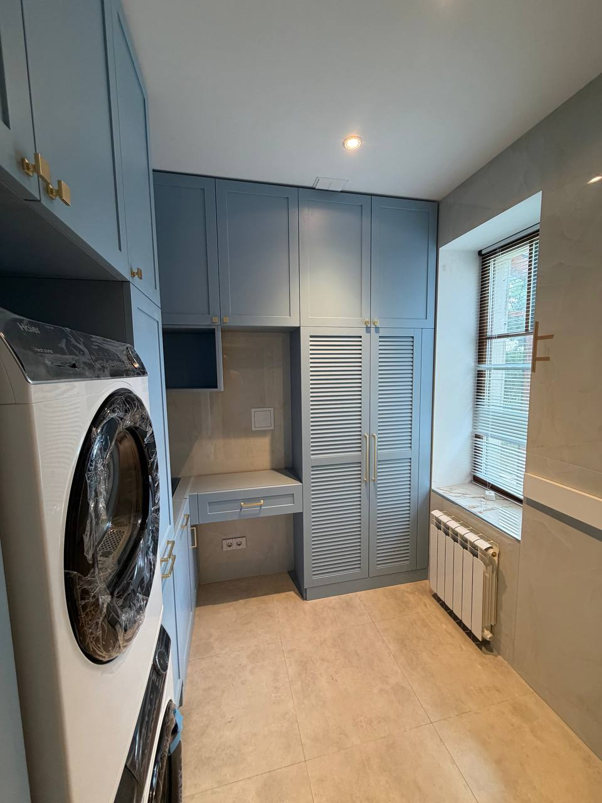
Частные интерьеры
Кухни и встроенная мебель
Кухни, шкафы, гардеробные, стеллажи и системы хранения под размеры помещения.
смотреть работы→
Производим кухни, встроенную мебель, фасады, декоративные элементы и решения для HoReCa, офисов и коммерческих объектов.
под размер · собственное производство · санкт-петербург
Выберите направление и перейдите в портфолио: внутри будут только подходящие работы, без лишних шагов и сложных карточек.

Кухни, шкафы, гардеробные, стеллажи и системы хранения под размеры помещения.
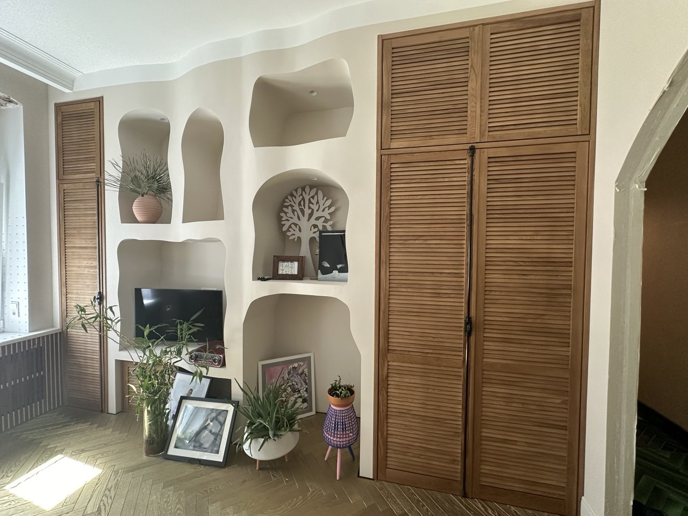
Фасады и дверцы для шкафов, ниш, гардеробных, постирочных и технических зон.
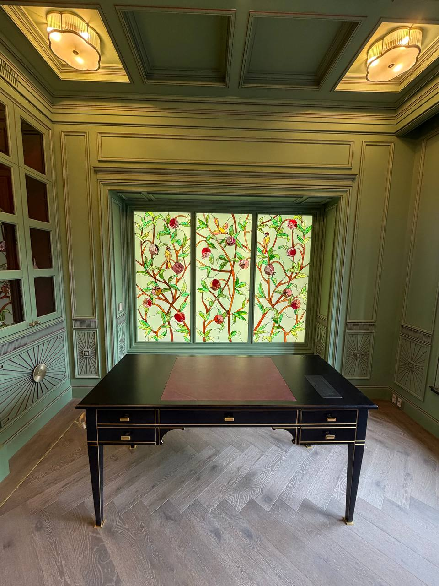
Мебель и деревянные решения для отелей, ресторанов, офисов и коммерческих пространств.
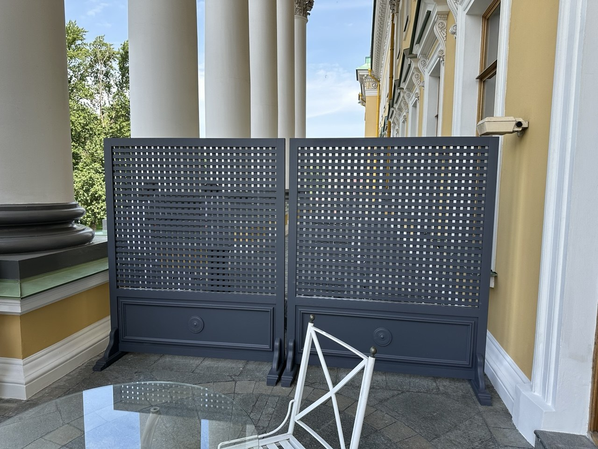
Декоративные зеркала, ширмы, подставки для багажа и сумок, двери для номерного фонда и нестандартные изделия.
Мы работаем открыто: можно приехать на производство, посмотреть материалы, обсудить задачу и увидеть, как создаются изделия. Это помогает заранее понять качество, подобрать решение под интерьер и спокойно согласовать детали до запуска в работу.
На производстве покажем материалы, варианты покрытия, конструктивные решения и примеры работ — от кухни и фасадов до мебели для бизнеса и нестандартных заказов.
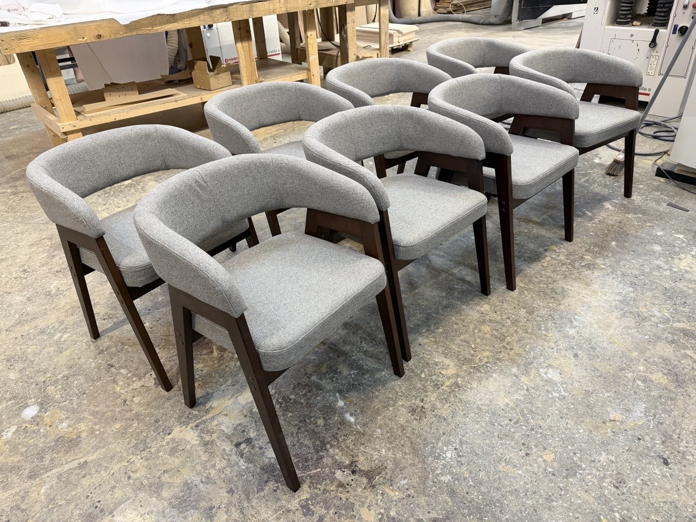
Производство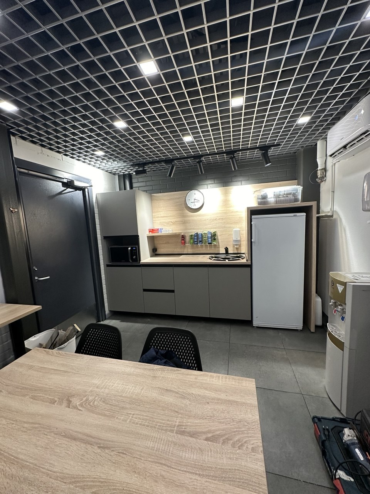
Готовое изделие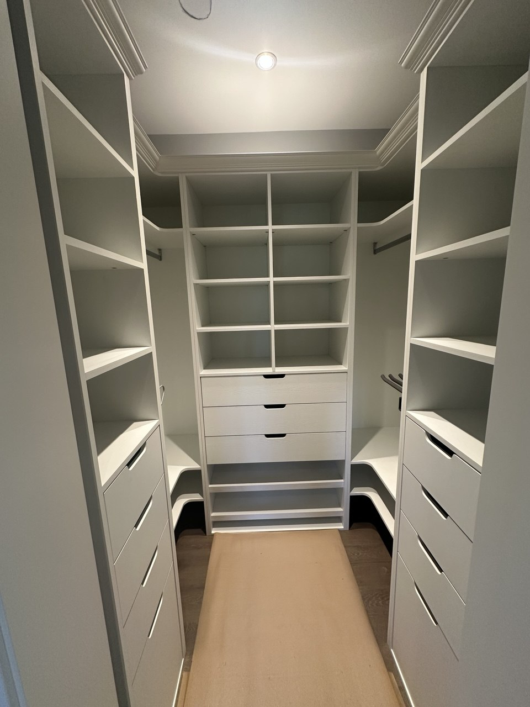
Под размер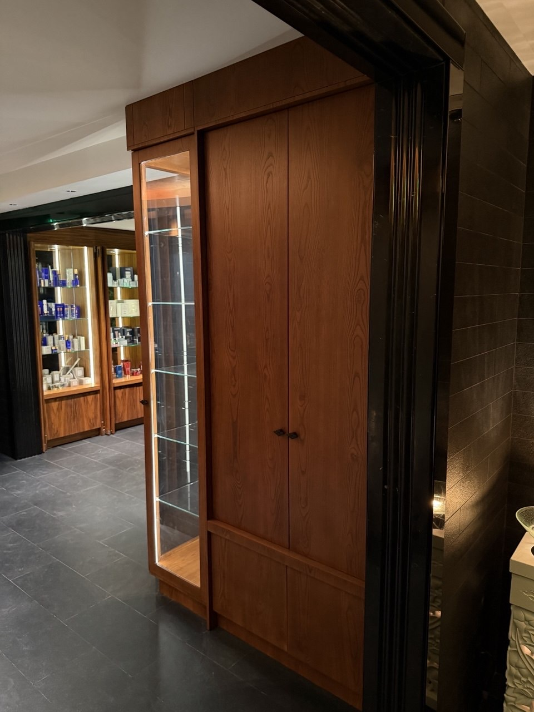
ДеталиИзготавливаем фасады и дверцы для шкафов, гардеробных, ниш, технических зон, постирочных, бойлерных и встроенной мебели.
Фасады производятся под конкретный проём: с подбором размера, материала, покрытия, цвета и фурнитуры.
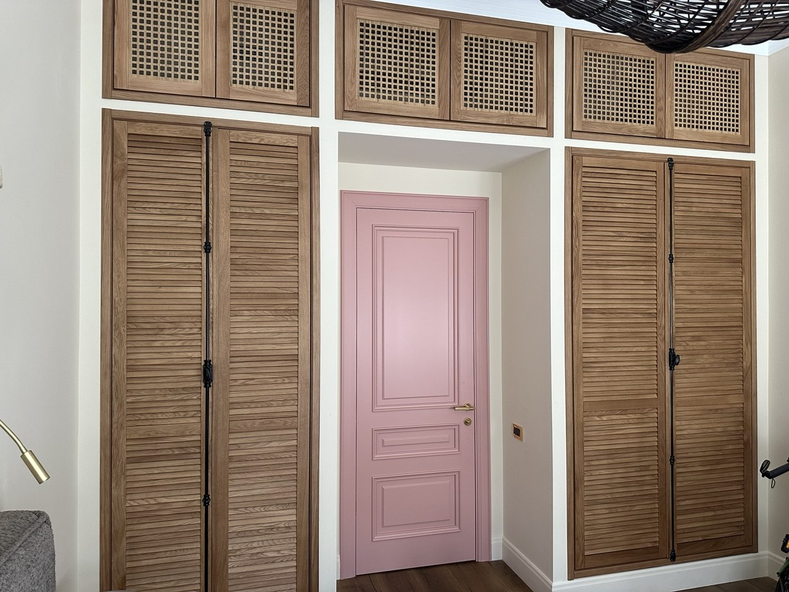
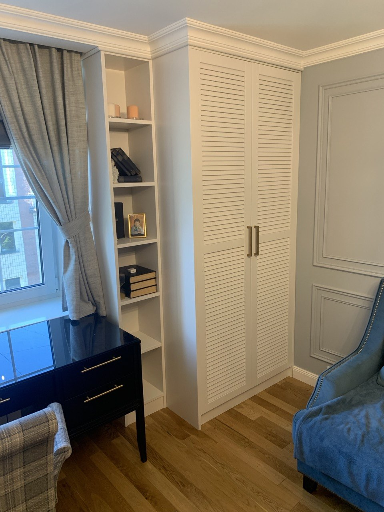
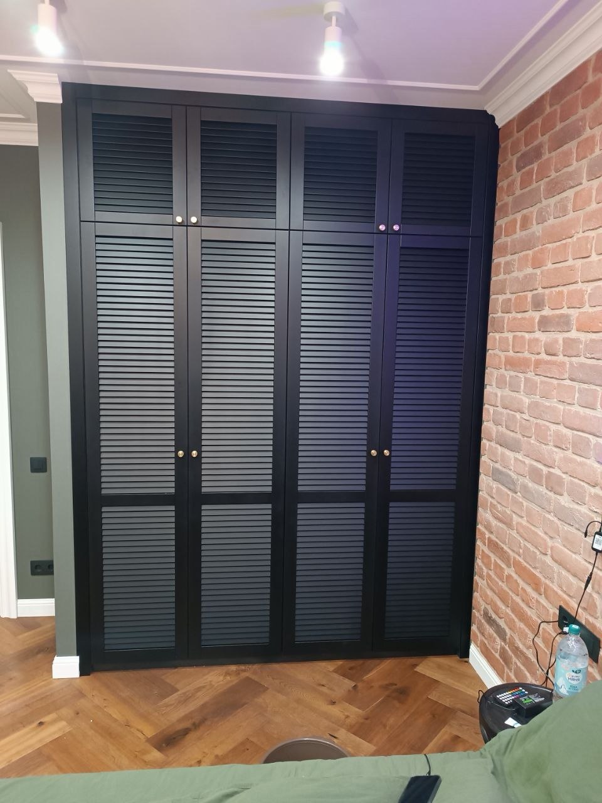
Цена зависит от размера, материала, покрытия, фурнитуры, сложности конструкции, объёма заказа и условий монтажа. Сначала уточняем задачу, затем готовим расчёт под конкретный проект.
Напишите в MAX, Telegram, позвоните или отправьте письмо. Можно начать с фото, размеров или простой идеи — дальше уточним детали и подготовим расчёт.